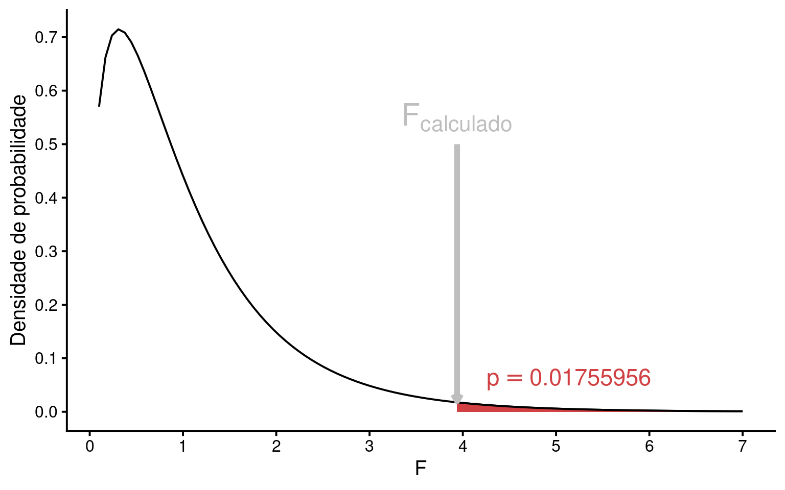
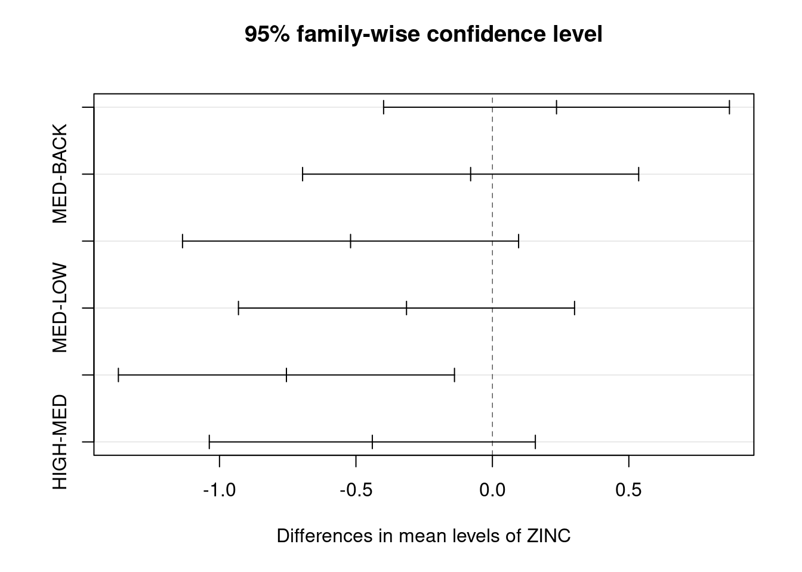
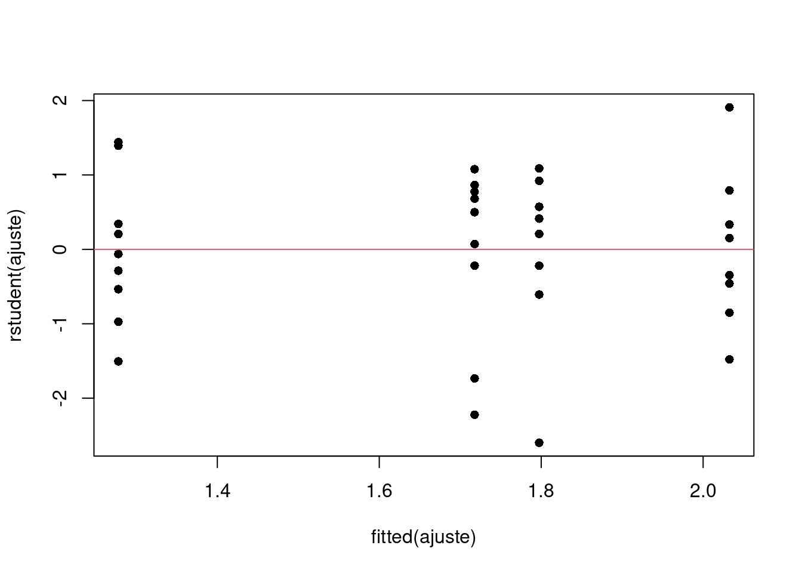

library(tidyverse)
library(patchwork)
library(gt)
source('scripts/anova-sim.r')Análise de variância de um fator
Avaliação de uma única fonte de variação, partição da soma de quadrados e aplicação do teste F.
Pacotes, funções e base de dados utilizadas
A Análise de Variância (ANOVA) desenvolvida por R. A. Fisher aplica-se à uma classe de desenho experimental em que a variável resposta \(Y\) é contínua e a variável explanatória \(X\) é categórica com \(2\) ou mais níveis. A ANOVA nos permite testar a hipótese de que duas ou mais médias amostrais (\(\overline{Y}_i\)) tenham sido obtidas de uma mesma população estatística com média \(\mu\). Alternativamente, podemos concluir que as médias amostrais diferem umas das outras, de tal forma que devemos assumir que foram amostradas a partir de diferentes populações estatísticas, nas quais ao menos um \(\mu_i\) seja diferente dos demais. Iremos denominar estas duas possibilidades de hipótese estatísticas sobre a relação entre as médias populacionais.
1 O modelo da ANOVA e as hipóteses estatísticas
O modelo pode ser representado por:
\[Y_{ij} = \mu + A_i + \epsilon_{ij}\]
onde \(Y_{ij}\) é a variável resposta associada à observação \(i\) do tratamento \(j\), \(\mu\) representa a média geral e \(A_i\) o efeito do tratamento \(i\). O termo \(\epsilon_{ij}\) é denominado de resíduo (ou erro) associado a cada observação, que assumimos ter distribuição normal com média zero e variância constante.
\[\epsilon \sim \mathcal{N}(0, \sigma^2)\]
Hipóteses estatísticas no modelo de ANOVA
\(H_0: \mu_1 = \mu_2 = \mu_3 =.... = \mu_k\) (HIPÓTESE NULA)
\(H_a\): ao menos um par de médias é diferente (HIPÓTESE ALTERNATIVA)
A hipótese nula (\(H_0\)) define a ausência de diferenças entre as médias populacionais enquanto a hipótese alternativa (\(H_a\)) refere-se a qualquer possibilidade diferente de \(H_0\). Se temos exatamente dois níveis em \(X\), a comparação de médias pode ser feita por meio de um teste \(t\). Por outro lado, quando temos mais de dois níveis em \(X\), devemos utilizar o modelo de ANOVA.
2 Partição das Soma dos Quadrados
Ao representarmos a distribuição de uma variável \(Y\) contínua em função de uma variável \(X\) categórica, geralmente estamos interessados em determinar se os diferentes níveis de \(X\) (diferentes grupos) têm médias similares ou se ao menos um dos níveis têm média diferente dos demais. Queremos uma medida que nos permita diferenciar situações como as apresentadas abaixo.

Na figura \(A\) todos os grupos são provenientes da mesma distribuição e têm médias aproximadamente iguais (\(\overline{Y}_A \approx \overline{Y}_B \approx \overline{Y}_C \approx \overline{Y}_D\)) e as diferenças são provinientes unicamente da variabilidade amostral. Na figura \(B\) o segundo grupo tem média mais elevada que os demais, enquanto na figura \(C\), todas as médias parecem ser diferentes entre si (\(\overline{Y}_A \ne \overline{Y}_B \ne \overline{Y}_C \ne \overline{Y}_D\)).
Para mensurar o grau de associação entre \(Y\) e \(X\) de modo a diferenciar as situações acima, vamos introduzir o processo de Partição da Soma dos Quadrados.
Suponha a situção abaixo:

Notações
- Temos \(k = 3\) grupos (
A,BouC) e para cada grupo \(n = 5\) observações. Denotamos por \(n_{ij}\) o número de observações dentro de cada grupo, em que \(i\) é a i-ésima observação (\(i = 1\) a \(5\)) do j-ésimo grupo (\(j = 1\) a \(3\) - gruposAaoC). Neste exemplo, o número de observações em cada grupo é o mesmo (\(n_1 = n_2 = n_3 = n\)), de modo que o total de observações é dado por:
\(N = k \times n = n_1 + n_2 + n_3 = 15\)
A média de cada grupo será denotada por \(\overline{Y}_j\), que neste exemplo são: \(Y_1 = 20.64\) (grupo
A), \(Y_2 = 28.68\) (grupoB) e \(Y_3 = 12.18\) (grupoC).Vamos denotar por \(\overline{\overline{Y}}\) a Grande Média, isto é, a média geral de todas as observações independente do grupo de origem.
\[\overline{\overline{Y}} = \sum_{j = 1}^{k}\sum_{i = 1}^{n}\frac{Y_{ij}}{N} = \frac{\overline{Y_1} + \overline{Y_2} + \overline{Y_3}}{3} = 20.5\]
Podemos agora observar estes elementos no gráfico de dispersão.

Em seguida, precisamos calcular \(3\) quantias, a Soma dos Quadrados Totais (\(SQ_{Total}\)), a Soma dos Quadrados dos Tratamentos \(SQ_{Trat}\) e a Soma dos Quadrados dos Resíduos \(SQ_{Res}\).
- Soma dos Quadrados Totais \(SQ_{Total}\): mede as diferenças entre \(Y_{ij}\) e \(\overline{\overline{Y}}\). Temos nesta expressão o somatório dos desvios ao quadrado de todas as observações com relação à grande média independente do grupo de origem de cada observação.
\[SQ_{Total} = \sum_{j = 1}^{k}\sum_{i = 1}^{n}(Y_{ij} - \overline{\overline{Y}})^2\]
- Soma dos Quadrados dos Tratamentos \(SQ_{Trat}\): mede as diferenças entre as médias dos tratamentos \(\overline{Y}_j\) e \(\overline{\overline{Y}}\), sendo portanto os desvios ao quadrado da média de cada tratamento subtraída da grande média. \(SQ_{Trat}\) também é chamada de soma dos quadrados entre grupos ou entre tratamentos
\[SQ_{Trat} = \sum_{j = 1}^{k}\sum_{i = 1}^{n_{j}}(\overline{Y}_{j} - \overline{\overline{Y}})^2 = \sum_{j = 1}^{k}n_{j}(\overline{Y}_{j} - \overline{\overline{Y}})^2\]
- Soma dos Quadrados dos Resíduos \(SQ_{Res}\): mede as diferenças entre cada observação \(Y_{ij}\) e a média de seu próprio grupo \(\overline{Y}_{j}\). \(SQ_{Res}\) também é chamada de soma dos quadrados dentro dos grupos ou dentro dos tratamentos
\[SQ_{Res} = \sum_{j = 1}^{k}\sum_{i = 1}^{n_{j}}(Y_{ij} - \overline{Y}_{j})^2\]
A característica aditiva das somas dos quadrados
A partição da soma dos quadrados consiste em decompor a variação total do experimento em uma parcela atribuída à variação entre tratamentos e outra parcela da variação dentro dos tratamentos. Isto é possível pois as somas dos quadrados definidas acima podem ser expressas de forma aditiva como:
\[SQ_{Total} = SQ_{Trat} + SQ_{Res}\]
Deste modo, é possível demostrar que:
\(\sum_{j = 1}^{k}\sum_{i = 1}^{n}(Y_{ij} - \overline{\overline{Y}})^2 = \sum_{j = 1}^{k}n_{j}(Y_{j} - \overline{\overline{Y}})^2 + \sum_{j = 1}^{k}\sum_{i = 1}^{n}(Y_{ij} - \overline{Y}_{j})^2\)
3 Medindo a associação entre \(Y\) e \(X\)
A característica aditiva das somas dos quadrados pode ser utilizada para mensurar o grau de dependência de \(Y_{ij}\) com respeito aos diferentes tratamentos. Compare as duas figuras abaixo:

A soma dos quadrados dentro dos grupos é a mesma nas duas figuras (\(SQ_{Res} = 362.6\)). No entanto, na figura da esquerda, em que as médias dos tratamentos são similares (e consequentemente próximas à grande média), a soma dos quadrados entre os tratamentos é muito menor (\(SQ_{Trat}^{esquerda} = 15.8\)) que na figura da direita, em que as médias dos tratamentos estão distantes entre si (\(SQ_{Trat}^{direita} = 680.8\)). É desta forma que a partição das somas dos quadrados nos permite diferenciar situações em que: i - a média dos grupos depende dos níveis do tratamento (figura da direita); de situações em que ii - a média não depende dos níveis do tratamento (figura da esquerda).
4 Quadrados médios e graus de liberdade
Para que os somatórios dos quadrados expressem uma medida de variação é necessário corrigi-los em função dos graus de liberdade (\(gl\)), obtendo assim os Quadrados médios conforme abaixo:
- Quadrado Médio Total (\(QM_{Total}\))
\[QM_{Total} = \frac{SQ_{Total}}{gl_{Total}}\]
em que \(gl_{Total} = N - 1\)
- Quadrado Médio dos Tratamentos (\(QM_{Trat}\))
\[QM_{Trat} = \frac{SQ_{Trat}}{gl_{Trat}}\]
em que \(gl_{Trat} = k - 1\)
- Quadrado Médio dos Resíduos (\(QM_{Res}\))
\[QM_{Res} = \frac{SQ_{Res}}{gl_{Res}}\]
em que \(gl_{Res} = N-k\)
Assim como a soma dos quadrados, os graus de liberdade também têm característica aditiva.
\[gl_{Total} = gl_{Trat} + gl_{Res} = (k - 1) + (N - K) = N - 1\]
Os quadrados médios que são estimativas de variâncias. Compare por exemplo a expressão do \(QM_{Total}\) com a fórmula da variância amostral (\(s^2\)) e verá que excetuando mudanças de notação, as expressões são essencialmente as mesmas.
5 Estatística \(F\) e teste de hipóteses
Uma vez que os quadrados médios são estimativas de variância, uma estatística de teste apropriada é:
\[F_{calculado} = \frac{QM_{Trat}}{QM_{Res}}\]
A estatística \(F\) (ou razão-\(F\)) está associada à distribuição de probabilidades \(F\) e nos permite comparar a variância associada ao tratamento com a variância associada aos resíduos. Com o valor de \(F_{calculado}\), o teste de hipóteses é possível após a definição do nível de significância \(\alpha\).
5.1 Nível de significância
Assim como discutimos nos testes \(Z\) e \(t\), o valor de \(\alpha\) estabelece um limite de aceitação para \(H_0\), isto é, um limite a partir do qual a estatística do teste se torna tão extrema que nos leva a assumir que \(H_0\) é improvável, devendo portanto ser rejeitada em favor de \(H_a\). Este passo é possível pois o valor de \(F_{calculado}\) pode ser associado à distribuição \(F\) de probabilidades, o que nos permite calcular a probabilidade:
\[P(F_{calculado}) \le \alpha\]
Para facilitar a notação denominaremos \(P(F_{calculado})\) simplesmente de valor de \(p\) expresso em vermelho na figura abaixo:
Tomada de decisão na ANOVA
Se \(p > \alpha\) –> ACEITAMOS \(H_0\)
Se \(p \le \alpha\) –> REJEITAMOS \(H_0\) (e assumimos \(H_a\) como verdadeira)

Tradicionalmente utiliza-se \(\alpha = 0.05\). Neste caso, \(H_0\) seria rejeitada somente de \(p \le 0.05\). Em algumas situações podemos utilizar \(\alpha = 0.01\), o que torna o experimento mais rigoroso, isto é, menos propenso ao erro do tipo I.
6 Um exemplo de ANOVA: os níveis de metais pesados afetam a diversidade de espécies?
Importe a base de dados medley.csv (disponível também em Chapter 10 - Single factor classification (ANOVA)) que avalia o impacto da presença de metais pesados na diversidade de espécies de diatomácias em riachos (Medley e Clements (1998); Queen, Quinn, e Keough (2002); Logan (2011)).
medley = read_csv("https://raw.githubusercontent.com/FCopf/datasets/refs/heads/main/medley.csv") |>
mutate(STREAM = factor(STREAM),
ZINC = factor(ZINC, ordered = TRUE,
levels = c("BACK", "LOW", "MED", "HIGH")))
var_medley = colnames(medley)
stream_levels = levels(medley$STREAM)
n_stream = nlevels(medley$STREAM)
zinc_levels = levels(medley$ZINC)
n_zinc = nlevels(medley$ZINC)medley |> gt()| STREAM | ZINC | DIVERSITY |
|---|---|---|
| Eagle | BACK | 2.27 |
| Eagle | HIGH | 1.25 |
| Eagle | HIGH | 1.15 |
| Eagle | MED | 1.62 |
| Blue | BACK | 1.70 |
| Blue | HIGH | 0.63 |
| Blue | BACK | 2.05 |
| Blue | BACK | 1.98 |
| Blue | HIGH | 1.04 |
| Blue | MED | 2.19 |
| Blue | MED | 2.10 |
| Snake | BACK | 2.20 |
| Snake | MED | 2.06 |
| Snake | HIGH | 1.90 |
| Snake | HIGH | 1.88 |
| Snake | HIGH | 0.85 |
| Arkan | LOW | 1.40 |
| Arkan | LOW | 2.18 |
| Arkan | LOW | 1.83 |
| Arkan | LOW | 1.88 |
| Arkan | MED | 2.02 |
| Arkan | MED | 1.94 |
| Arkan | LOW | 2.10 |
| Chalk | LOW | 2.38 |
| Chalk | HIGH | 1.43 |
| Chalk | HIGH | 1.37 |
| Chalk | MED | 1.75 |
| Chalk | LOW | 2.83 |
| Splat | BACK | 1.53 |
| Splat | BACK | 0.76 |
| Splat | MED | 0.80 |
| Splat | LOW | 1.66 |
| Splat | MED | 0.98 |
| Splat | BACK | 1.89 |
A coluna STREAM é uma variável categórica contendo o nome dos \(6\) riachos amostrados (Arkan, Blue, Chalk, Eagle, Snake, Splat). A coluna ZINC é uma variável categórica ordinal com \(4\) níveis de concentração de zinco na água (BACK < LOW < MED < HIGH). O primeiro nível (BACK) é o nível de referência. Finalmente, a coluna DIVERSITY é uma variável contínua que contém a diversidade de diatomácieas medida pelo índice de Shannon em cada uma das 34 amostras.
Vamos nos concentrar nas variáveis DIVERSITY e ZINC. DIVERSITY será a variável resposta. Dizemos que ZINC é um tratamento, isto é, uma condição experimental (ou observacional) sob a qual a variável dependente \(Y\) foi medida.
Para verificarmos a distribuição de diversidade para cada concentração de zinco vamos fazer um boxplot da variável DIVERSITY em função de ZINC.
Código
ggplot(medley) +
aes(x = ZINC, y = DIVERSITY) +
geom_boxplot(coef = 3) +
theme_classic(base_size = 15)
Vemos que a concentração HIGH aparenta ter menor diversidade que as demais concentralções. A ANOVA nos permitirá testar esta suposição.
Hipópteses estatísticas
\(H_0: \mu_{BACK} = \mu_{LOW} = \mu_{MED} = \mu_{HIGH}\)
\(H_a\): ao menos um \(\mu\) é diferente
\(\alpha = 0.05\)
6.1 Calculando a ANOVA
i. Somatórios dos quadrados
\(SQ_{Trat} = \sum_{j = 1}^{k}\sum_{i = 1}^{n_{j}}(\overline{Y}_{j} - \overline{\overline{Y}})^2 = 2.5666124\)
\(SQ_{Res} = \sum_{j = 1}^{k}\sum_{i = 1}^{n_{j}}(Y_{ij} - \overline{Y}_{j})^2 = 6.5164111\)
ii. Graus de liberdade
\(gl_{Trat} = k - 1 = 3\)
\(gl_{Res} = N-k = 30\)
iii. Quadrados médios
\(QM_{Trat} = \frac{SQ_{Trat}}{gl_{Trat}} = 0.8555375\)
\(QM_{Res} = \frac{SQ_{Res}}{gl_{Res}} = 0.2172137\)
iv. Estatística \(F\)
\(F_{calculado} = \frac{QM_{Trat}}{QM_{Res}} = 3.939\)
Tabela da ANOVA**
As quantias acima são tradicionalmente expressas em uma Tabela de ANOVA.
Código
aov_ex = aov(DIVERSITY ~ ZINC, data = medley)
anova_ex = anova(aov_ex)| Df | Sum Sq | Mean Sq | F value | Pr(>F) |
|---|---|---|---|---|
| 3 | 2.566612 | 0.8555375 | 3.93869 | 0.01755956 |
| 30 | 6.516411 | 0.2172137 | NA | NA |
em que:
Df: graus de liberdade
Sum Sq: soma dos quadrados
Mean Sq: quadrados médios
F value: valor de \(F_{calculado}\)
Pr(>F): valor de p
A primeira linha refere-se aos valores associados aos tratamentos e a segunda linha aos resíduos. Note que o cômputo de \(SQ_{Total}\), \(gl_{Total}\) e \(QM_{Total}\) não é realmente necessário.
O valor de \(p = 0.0175596\) mostrado na Tabela 1 refere-se à área na distribuição \(F\) que fica acima de \(F_{calculado}\) e que está representado em vermelho na Figura 1.

Ao verificar que \(p \le \alpha\), nossa conclusão deve ser de REJEITAR \(H_0\), pois \(F_{calculado}\) é muito extremo para ser resultante da hipótese nula. Neste caso, assumimos que a \(H_a\) é mais condizente com a estrutura dos dados, de modo que os tratamentos devem ser provenientes de populações estatísticas com diferentes médias \(\mu\).
7 Testes a posteriori de comparação de médias: o teste de Tukey
Tendo rejeitado \(H_0\) concluímos que ao menos 1 par médias é diferente entre si. Nos resta saber quais pares são estatisticamente diferentes, o que nos leva a buscar por um teste que permita fazer comparações par-a-par. Os testes a posteriori são uma alternativa.
Entre os diferentes testes a posteriori na literatura discutiremos o teste de Tukey, em que o objetivo é estabelecer uma Diferença Honesta Significativa (DHS) entre um dado par de médias. Considerando a diferença entre um par de médias e o erro padrão das diferenças de médias, a estatística do teste de Tukey é:
\[q = \frac{\overline{Y}_1 - \overline{Y}_2}{SE}\]
em que:
\[SE = \sqrt{\frac{QM_{Res}}{2}(\frac{1}{n_1} + \frac{1}{n_2})}\]
onde:
\(q\): é e estatística do teste
\(\overline{Y}_1\): é a maior das médias do par consideraddo;
\(\overline{Y}_2\): é a menor das médias do par consideraddo
\(QM_{Res}\): é quadrado médio do resíduo obtido na ANOVA, e;
\(n_1\), \(n_2\): os tamanhos amostrais de cada grupo envolvido na comparação.
O valor crítico de \(q\) pode ser obtido de uma tabela estatística da distribuição de amplitude normalizada (studentized range q table). Para um dado \(\alpha\), o valor desejado de \(q\) é encontrado cruzando a linha contento o número \(k\) de tratamentos do experimento com a linha contendo os graus de liberdade do resíduo (\(gl_{Res}\)). Veja um exemplo desta tabela no link: Studentized Range q Table.
Em nosso exemplo, os valores de \(q\) entre os pares de médias serão:
Tukey_tab |>
gt() |>
cols_label(
combinacoes = "Combinações",
diff = "Diferença",
n1 = "n1",
n2 = "n2",
se = "Erro Padrão",
q = "Estatística q",
H0 = "Decisão"
) |>
fmt_number(
columns = c(diff, se, q),
decimals = 3
) |>
tab_style(
style = cell_fill(color = "orange"),
locations = cells_body(
columns = H0,
rows = q >= qc
)
) |>
tab_options(
table.width = "100%",
column_labels.font.weight = "bold"
)| Combinações | Diferença | n1 | n2 | Erro Padrão | Estatística q | Decisão |
|---|---|---|---|---|---|---|
| LOW-BACK | 0.235 | 8 | 8 | 0.165 | 1.426 | Aceita H0 |
| MED-BACK | 0.080 | 8 | 8 | 0.165 | 0.484 | Aceita H0 |
| HIGH-BACK | 0.520 | 9 | 8 | 0.160 | 3.246 | Aceita H0 |
| MED-LOW | 0.315 | 9 | 8 | 0.160 | 1.965 | Aceita H0 |
| HIGH-LOW | 0.755 | 9 | 8 | 0.160 | 4.713 | Rejeita H0 |
| HIGH-MED | 0.440 | 9 | 9 | 0.155 | 2.832 | Aceita H0 |
O limite crítico para o valor de \(q\) tabelado é \(q_{0.95,30,4} = 3.845\) (veja em: Studentized Range q Table), deste modo somente a comparação entre HIGH-LOW sugere ter médias significativamente diferentes.
8 Ajustando a ANOVA no R
A ANOVA no R pode ser feita com o comando aov.
ajuste = aov(DIVERSITY ~ ZINC, data = medley)
ajusteCall:
aov(formula = DIVERSITY ~ ZINC, data = medley)
Terms:
ZINC Residuals
Sum of Squares 2.566612 6.516411
Deg. of Freedom 3 30
Residual standard error: 0.4660619
Estimated effects may be unbalanced
Fórmula no R
A notação de fórmula no R é escrita como: Y ~ Xonde lê-se \(Y\) é função de \(X\).
O comando acima fez os cálculos da ANOVA, isto é, computou as somas dos quadrados, os graus de liberdade, os quadrados médios, o \(F_{calculado}\) e o valor de \(p\). Para visualizarmos a tabela da ANOVA escrevemos:
anova(ajuste)Analysis of Variance Table
Response: DIVERSITY
Df Sum Sq Mean Sq F value Pr(>F)
ZINC 3 2.5666 0.85554 3.9387 0.01756 *
Residuals 30 6.5164 0.21721
---
Signif. codes: 0 '***' 0.001 '**' 0.01 '*' 0.05 '.' 0.1 ' ' 1Note que os resultados coincidem com o que apresentamos anteriormente. Como o valor de \(p\) foi menor que \(\alpha = 0.05\), concluimos que a ANOVA foi significativa, isto é, indicou que ao menos um par de médias difere entre si. Podemos fazer o teste a posteriori de Tukey com o comando:
alfa = 0.05
TukeyHSD(ajuste, conf.level = 1-alfa) Tukey multiple comparisons of means
95% family-wise confidence level
Fit: aov(formula = DIVERSITY ~ ZINC, data = medley)
$ZINC
diff lwr upr p adj
LOW-BACK 0.23500000 -0.3986367 0.86863665 0.7457444
MED-BACK -0.07972222 -0.6955064 0.53606192 0.9847376
HIGH-BACK -0.51972222 -1.1355064 0.09606192 0.1218677
MED-LOW -0.31472222 -0.9305064 0.30106192 0.5153456
HIGH-LOW -0.75472222 -1.3705064 -0.13893808 0.0116543
HIGH-MED -0.44000000 -1.0373984 0.15739837 0.2095597O resultado apresenta todas as comparações possíveis entre os grupos, mostrando as diferenças de médias, seus intervalos de confiança a \(95\%\) e os valores de \(p\), indicando quais destas diferenças são significativas (\(p \le \alpha\)). Nvamente, estes resultados nos permitem concluir que somente o par HIGH-LOW difere entre si, pois p adj < 0.05.
O gráfico abaixo facilita a visualização das comparações, sobretudo em situações com muitos pares de médias envolvidos:
plot(TukeyHSD(ajuste))
Neste gráfico, são consideradas estatisticamente significativas as comparações em que o intervalo de confiança não inclui o zero.
9 Pressupostos da ANOVA
Os pressupostos da ANOVA são:
As observações são independentes e;
A variância dos resíduos é homogênea e;
Os resíduos têm distribuição normal com média \(0\) e variância consante \(\sigma^2\).
Vamos inicialmente testar o pressuposto de homogeneidade de variâncias com um teste \(F\).
medley |> group_by(ZINC) |>
summarise(Var = var(DIVERSITY)) |>
gt()| ZINC | Var |
|---|---|
| BACK | 0.2354786 |
| LOW | 0.1980214 |
| MED | 0.2530194 |
| HIGH | 0.1822194 |
Note que a maior variância é \(0.2530194\) e a menor \(0.1822194\).
O teste \(F\) consiste em dividir a maior variância pela menor:
vmax = medley$DIVERSITY[medley$ZINC == "MED"]
vmin = medley$DIVERSITY[medley$ZINC == "HIGH"]
var.test(vmax, vmin)
F test to compare two variances
data: vmax and vmin
F = 1.3885, num df = 8, denom df = 8, p-value = 0.6534
alternative hypothesis: true ratio of variances is not equal to 1
95 percent confidence interval:
0.3132103 6.1557698
sample estimates:
ratio of variances
1.388543 A maior variância foi 1.39 vezes maior que a menor variância e o test F sugere que esta diferença é não-significativa a \(5\%\) (\(p < 0.05\)). Isto indica que as variâncias são homogêneas.
A verificação visual de que as variâncias são homogêneas pode também ser inspecionada pelo gráfico de resíduos:
plot(rstudent(ajuste) ~ fitted(ajuste), pch = 16)
abline(h = 0, col = 2)
Em seguida avaliamos o histograma dos resíduos e aplicamos um teste de normalidade (ex. teste de Shapiro-Wilk) para verificar se o pressuposto de normalidade pode ser aceito.
hist(rstudent(ajuste), breaks = 10)
shapiro.test(rstudent(ajuste))
Shapiro-Wilk normality test
data: rstudent(ajuste)
W = 0.96696, p-value = 0.3828Neste caso, o valor de \(p > 0.05\) indica não haver desvio da normalidade.
Referências
Logan, Murray. 2011. Biostatistical design and analysis using R: a practical guide. John Wiley & Sons.
Medley, C. N., e W. H. Clements. 1998. «Responses of diatom communities to heavy metals in streams: the influence of longitudinal variation». Ecological Applications 9: 631–44.
Queen, Jerry P, Gerry P Quinn, e Michael J Keough. 2002. Experimental design and data analysis for biologists. Cambridge university press.